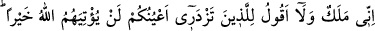
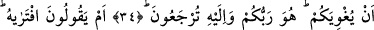

NUH (A.S.) VE KAVMİ
25. Andolsun biz Nûh’u kavmine elçi gönderdik. (Onlara dedi ki:) “Ben sizin için
apaçık bir uyarıcıyım.”
26. “Allah’tan başkasına tapmayın. Gerçekten ben sizin acı bir günün azabına
uğramanızdan korkuyorum.” (dedi.)
27. Kavminden ileri gelen inkârcılar dediler ki: “Biz seni de bizim gibi bir insan
olarak görüyoruz ve sana bizim basit görüşlü ayak takımımızdan başkasının